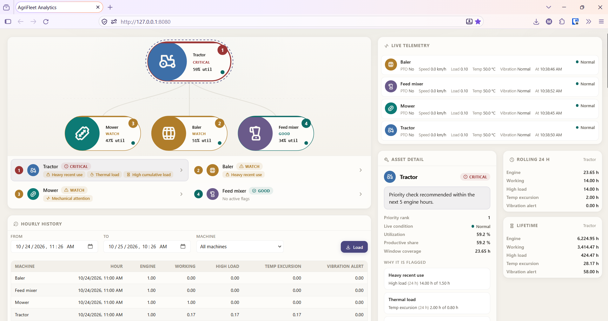
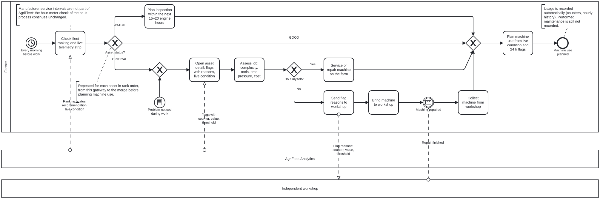

Privates Portfolio-Projekt. Die vier Maschinen und ihre Telemetrie sind simuliert. Ist-Prozess und Stakeholder-Bedürfnisse stammen aus der eigenen landwirtschaftlichen Erfahrung des Autors und wurden nicht in Interviews mit anderen Landwirten oder Werkstätten validiert.
Auf einem kleinen Grünland- und Milchviehbetrieb werden Maschinen gewartet, wenn jemand an ein fälliges Intervall denkt oder wenn sie bei der Arbeit ausfallen. Nichts wird aufgezeichnet, und die Werkstatt erhält nur eine mündliche Beschreibung.
Requirements Engineering durchgängig: Stakeholder-Analyse, BPMN-Ist- und Soll-Prozess, User Story Map (19 Stories) und 22 Anforderungen nach MoSCoW, nachverfolgt vom Bedürfnis bis zu Code und Tests.
Jeden Morgen öffnet der Landwirt ein Dashboard, das die vier Maschinen nach Dringlichkeit ordnet und Status, Serviceempfehlung und den gemessenen Grund jeder Warnung zeigt. Keine versteckte Bewertung, kein Machine Learning.
Das Must-Release läuft als verteiltes System aus drei Spring-Boot-Modulen. Von den 22 Anforderungen sind 18 durch Unit-Tests und 4 durch Inspektion oder Demonstration verifiziert.
| Aspekt | Ist | Soll mit AgriFleet |
|---|---|---|
| Auslöser einer Prüfung | Intervall aus dem Gedächtnis oder Ausfall | Tägliche Prüfung der gereihten Flotte |
| Reihenfolge der Maschinen | Keine; jede Maschine für sich | Rang aus Warnungen und Belastung |
| Info für die Werkstatt | Mündliche Problembeschreibung | Zähler, Messwert und Schwellenwert |
| Nutzungsaufzeichnung | Keine | Automatischer Stundenverlauf |
Bewusst unverändert: Herstellerintervalle prüft der Landwirt weiter selbst, durchgeführte Wartungen werden nicht erfasst.

